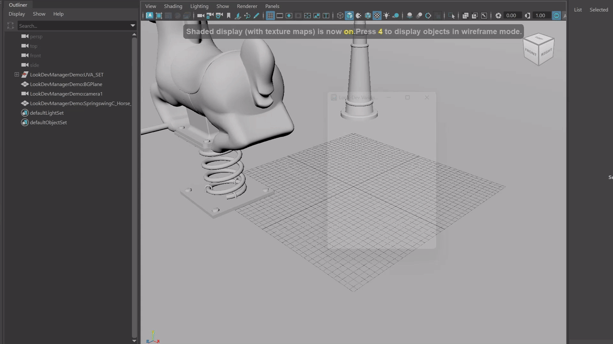
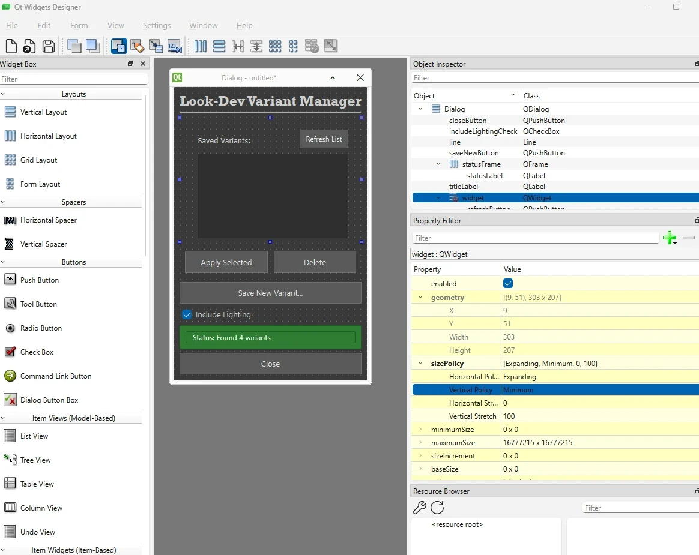

Demo
Goal
Build a Maya Python tool that allows artists to save, manage, and share look development setups across scenes.
Process
- Captures the current lookdev state as a named variant, including material assignments, shader parameters, texture paths, and lighting information.
- Variants can be saved, switched, exported, and imported as JSON files for cross-scene and cross-artist sharing.

Can apply the Look even when geometry has referenced geo name

I have done an initial concept for the Ui design in Qt Designer to figure out how the artist might use it.
Technical Details
- JSON serialization: Variants stored as human-readable JSON rather than Maya binary: allows version control via
Git, manual inspection, and cross-platform portability.
- Maya Python API for shader introspection: Uses cmds.listConnections and cmds.getAttr to capture the full shading
graph state rather than just top-level assignments, preserving texture connections and node parameter values.
Comment
The learning goal for this project was to build a Python tool in Maya that allows artists to easily save, manage, and share Look Development setups across scenes. I wanted to explore JSON as a lightweight data storage format and understand how shader assignments, material attributes, and lighting information could be serialized and reconstructed efficiently.
Another goal was to create a portable workflow where artists can export and import Looks (such as Clean, Dirty, Rusty variants) without heavy scene dependencies, keeping the data exchange between artists as lightweight and version-control friendly as possible.
For Look data, I used JSON to serialize shader assignments, material attributes, texture paths, and light properties. This keeps the exported files lightweight and easy to share between artists without heavy scene dependencies. To reconstruct shaders in an empty scene, the tool exports shader networks as .ma files and JSON then maps which shader gets assigned to which geometry upon import.
To handle name mismatches between scenes, I built a smart name matching system with a priority-based approach: it strips full paths down to basenames, removes namespaces, version suffixes (e.g., _v01, _v05), and common Maya suffixes (_GEO, _MESH), then attempts matching from exact to normalized. This means an artist can apply a Look even when geometry has been misspelled, versioned up, or re-referenced into a different hierarchy.
One challenge was getting lighting setups to properly reconstruct when applied to a new scene. Light types, intensities, and transform values needed careful handling to match the original setup. Figuring out how Maya stores and reconnects these attributes through Python was a great learning process.
If I were to expand on this project, I would look into supporting multiple render layer overrides and possibly integrating the tool with a pipeline-friendly asset management system.